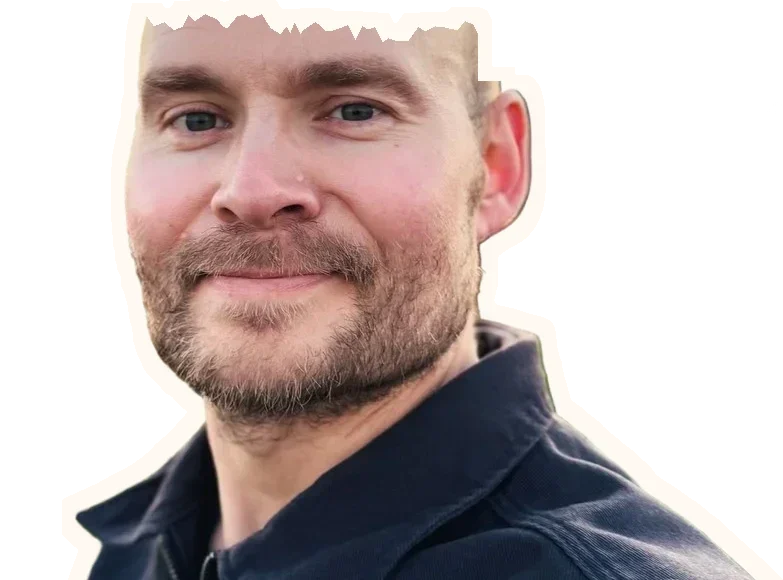
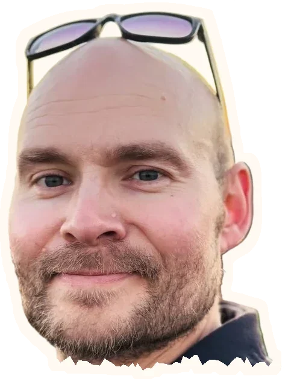

Music, with people.
I sing and play guitar at weddings and events with Flow & Green. I'm also learning electric guitar—there's always something new to get my fingers around.
More from Flow & Green ↗Open to Product Owner and Product Manager roles
From customer problems to better products.
With practical AI experience.

What I bring
Tools I work with
As health and safety representative at iPaper in 2025–2026, I helped implement office initiatives based on employee input from surveys.
I translate customer needs into clear requirements, better features and simpler workflows. At iPaper, I helped expand automation, improve usability and explain new features through videos and demos. Nine years from support to Product Owner give me the customer perspective and the technical understanding. I also build websites, an app and reusable workflows with AI.
Understand needs, prioritise and follow product improvements through to users.
Listen to customers, users and developers and bring their perspectives together around a useful solution.
Create useful, accessible solutions and use AI to explore, build and improve.
I've built websites with Claude and Codex, and a shopping-list app with Claude. I develop reusable skills and use AI loops to review and improve the work. I can explore an idea and build something I can try out.
AI helpConcrete examples from iPaper
At iPaper, I helped expand shared automation, simplify workflows and explain new features. Here are four concrete examples.
Enrichment Automation / Shared solution
I expanded Enrichment Automation with a developer so one shared solution could support more data sources and customer needs. It makes PDF catalogues shoppable through product links and items that can be added to a cart.
Product images / User experience
I helped replace a slow, cumbersome product-image workflow with a redesigned interface and asynchronous processing. After two iterations, users were satisfied with the result.
Product communication / Videos and demos
I turned new features into internal product updates, release notes, customer how-to videos and weekly demos. The materials explained what was new and how customers and colleagues could use it.
Shipped / Price formatting
I specified configurable currency placement and trailing-zero controls. Both shipped and received positive feedback from the customers who had raised the needs.
Practical AI help for small businesses
I'd like to help small businesses use AI on a concrete everyday task. Perhaps you spend too much time finding information, writing the same replies or moving text between systems.
We start with the task and the people doing it. Together, we define a small solution, build a prototype and test whether it helps. Then we decide whether to take it further.
Draft customer replies or internal guides based on your own material. A person reviews and approves the content.
Reusable content and documentation workflows that follow your requirements, structure and way of writing.
A focused prototype for a repetitive task, which we can try with the people who would use it.
Write a couple of lines about the task, who handles it today and what makes it difficult. That gives us something concrete to discuss.
Always 
Often making
something.
I sing and play guitar at weddings and events with Flow & Green. I'm also learning electric guitar—there's always something new to get my fingers around.
More from Flow & Green ↗On two wheels
Gravel biking, tinkering with the bike, and heading out to see where a route takes me.
One step at a time
Long-distance running gives me time outdoors and a different way to work through a thought.
And at the centre of it all:
family, home, and the next thing to build.